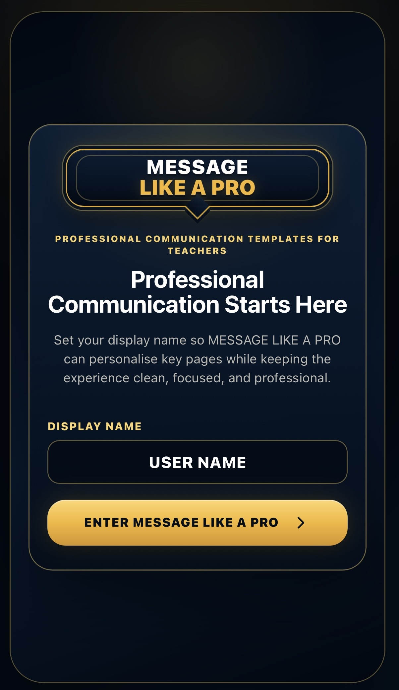
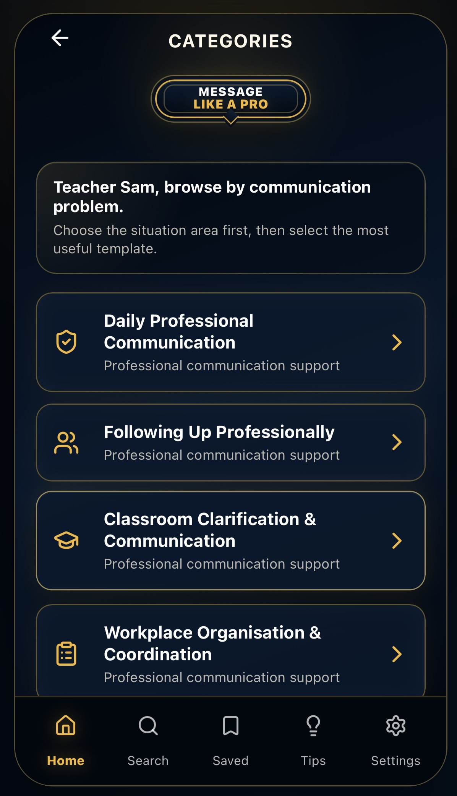
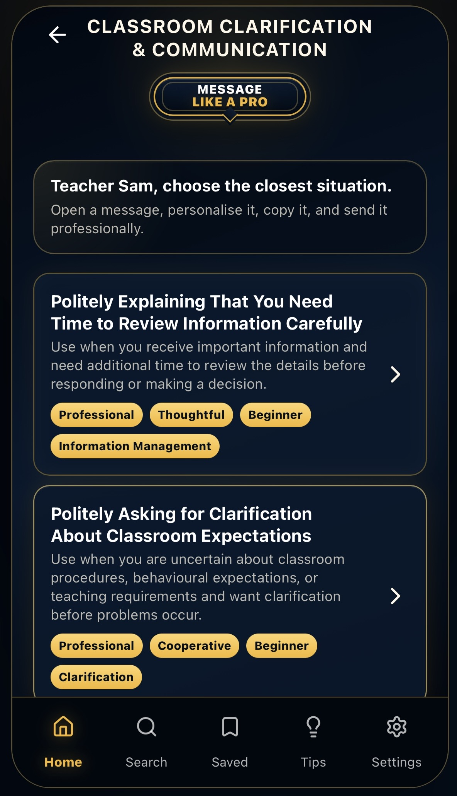
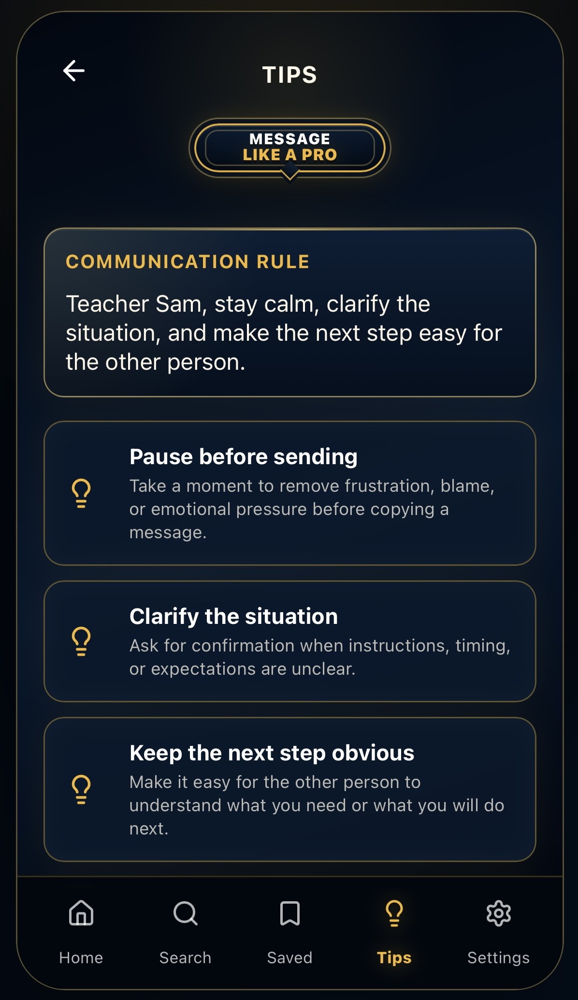
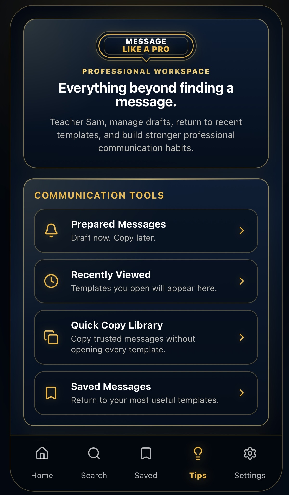
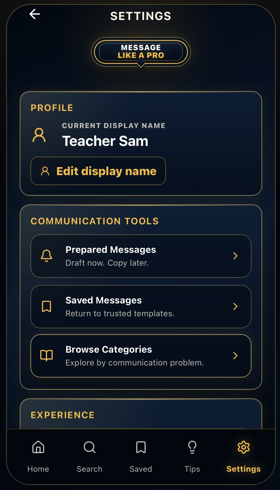

DIGITAL IMPLEMENTATION
Professional communication support whenever you need it.
The Message Like A Pro app is being developed to help teachers access professional communication support quickly when workplace communication feels unclear, sensitive, or difficult.
The book teaches the system. The app helps teachers apply it through searchable support, professional categories, saved messages, quick-copy tools, and communication guidance.

What The App Supports
The app is not just a template library. It is a digital layer for the MLAP Communication System.
Find Support Quickly
Move from uncertainty to a more structured professional response.
Respond With Confidence
Reduce hesitation when communicating with colleagues, leaders, administrators, and school teams.
Build Better Habits
Strengthen communication judgement, not simply wording.
Support Under Pressure
Access professional communication guidance when situations feel sensitive or unclear.
Save Useful Messages
Keep important communication support ready for future workplace situations.
Apply One System
The book teaches the communication system. The app helps make it practical and accessible.
See MLAP In Action
A guided look at how the app supports professional communication from first entry to message selection.

01 — START WITH CONFIDENCE
Professional communication starts here.
The app begins by creating a focused professional workspace for the teacher.
02 — FAST ACCESS
Find communication support fast.
Teachers can begin from the situation they are facing and move quickly towards useful support.

03 — COMMUNICATION SITUATIONS
Find support by communication problem.
Instead of searching randomly, teachers can choose the closest workplace communication area first.
04 — PROFESSIONAL RESPONSE
Open support. Personalise it. Communicate professionally.
The app helps teachers move from uncertainty to a clearer, calmer professional response.


05 — COMMUNICATION HABITS
Build better professional judgement.
MLAP supports calmer, clearer professional thinking rather than only providing wording.
06 — PROFESSIONAL WORKSPACE
Everything beyond finding a message.
Prepared messages, recently viewed support, quick-copy tools, and saved messages help teachers stay organised.


07 — PERSONAL WORKSPACE
A professional tool, not a random list.
The app is being developed as a serious communication support tool connected to the wider MLAP system.
What Makes MLAP Different
The app is an implementation of the communication system, not the whole product by itself.
Communication System
Built around a professional communication method and practical workplace judgement.
Research-Informed
Developed from multilingual workplace communication needs rather than generic message writing.
Professional Judgement
Supports decisions about tone, clarity, pressure, relationships, and context.
Professional communication should not depend on guesswork.
Discover the communication system behind the app through the flagship Message Like A Pro book, or enquire about app access.